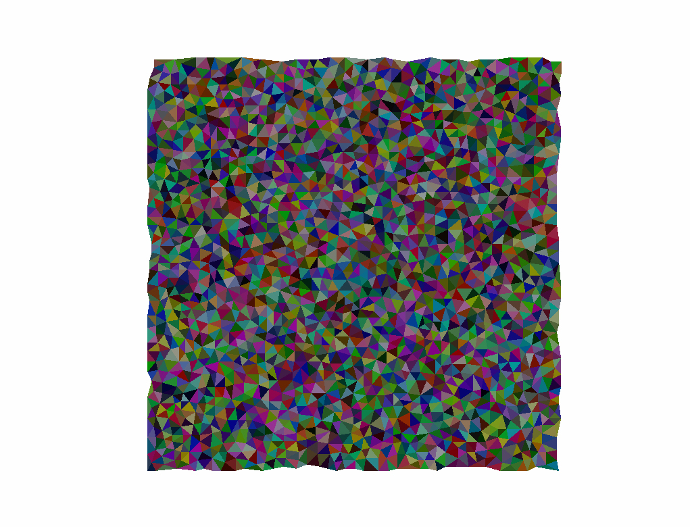

Concept
I have always been fascinated by the idea of procedurally generating content for games. In the past I experimented with perlin noise in the Unity engine and have attempted my own version of "wave function collapse". I have never tried to really build 3d environments procedurally before though. I did some research and found many well document example of placing prefabricated rooms randomly and connecting them. But I wanted to see if the rooms could also be randomly generated as well. This is my first attempt at this project.
The main inspiration for this project were medieval castles. I researched different layouts and designs and noted how they were constructed. Towers would surround the castle and within it there were wards that would connect to the main rooms of the castles. Each main room would be connected to smaller support rooms; for example a kitchen would have a buttlery, bottlery or pantry adjacent to it.
Implementation
To create these rooms, a field of points would be generated with Poisson-disc sampling. These points would encompass the size of the map and the density would be dependent on the the resolution of the mesh that would make up the room.
Delaunay triangulation was then applied to triangulate the points generated. After this process any triangles that had extreme angles would be removed.

From here, a new field of points were generated to serve as spawn points for the rooms. These points were then trimmed to remove any near the borders of the map.
For every tower that needs to be created, a random spawn point is chosen and a tower would be generated at that point. A random point within the tower would be chose as its "center" and using Dijkstra’s algorithm to find the shortest path, the "walls" of the castle are defined and all potential spawn points outside of the walls are removed.
Spawns for main rooms are picked first, then their support rooms. After checking that all rooms have spawn points and that there are enough triangles to build all the rooms the layout is accepted. The rooms are built by "growing" the mesh from the rooms spawn points. Adjacent triangles are selected until the room is large enough or it runs out of room, then the process begins all over. Rooms are shown below as colored regions. Once all rooms have been constructed, the rooms are connected by a Delaunay triangulation again and using Prim’s Algorithm a minimum spanning tree graph is made to ensure all rooms are reachable.
To connect each of the rooms together a path would need to be found between each room. Using the edges from the graph created by the MST, a path could be found by using the A* algorithm. If paths were formed that went through adjacent rooms, doorways could be added, if the paths went through empty space, hallways are created to connect the rooms.
Conclusion
This project taught me a lot about managing time complexities and optimization. The algorithm to generate a useful layout would sometimes take many iterations to produce a usable outcome. Further optimizations could still be taken from here, like using heap sort for A*, creating a single data structure for nodes instead of different structures for triangle data and node data. I think from here I'd like to explore irregular grids. I'd like to aim for an end result with a bit more uniformness, but this has been a fun stepping stone in my journey to learn more about procedural generation.
This project is live here and the code is available on my github. Thanks for reading, if you have any questions or feedback feel free to contact me!